Nakanoto, Ishikawa: things to do, food and stays
Nakanoto · Ishikawa
Nakanoto
Highlighted on the Ishikawa map.

Stay
古民家ゲストハウス結舎－ＹＵＩＮＯＹＡ－
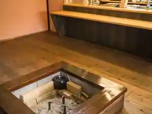
Ko Minka Guesthouse Ketsu Sha -YUINOYA
Guesthouse in Ryokawawo, Nakanoto with a renovated traditional house.
Dining
鶏SOBA スプーンヌードル

Niwatori SOBA Supunnudoru
月とピエロ
Gatsu To Piero
カフェ食堂 れんげや
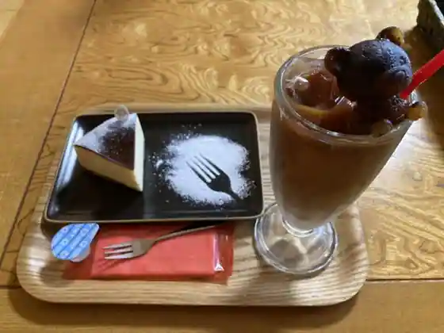
Cafe Shokudo Rengeya
蕎麦工房 一休
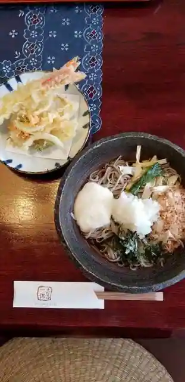
Soba Kobo Ikkyu
道の駅 織姫の里なかのと
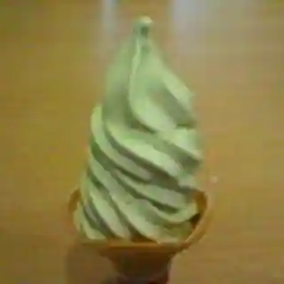
Michi No Eki Orihime No Sato Nakanoto
御菓子司のと屋
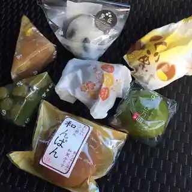
O Kashi Tsukasa Noto Ya
千代寿司
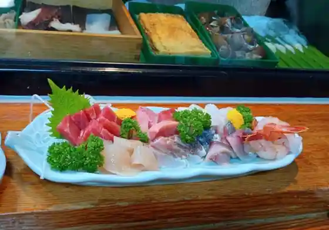
Chiyotoshi Tsukasa
まるにし
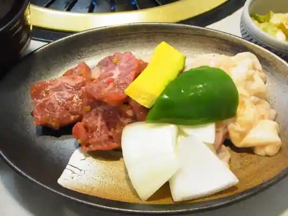
Marunishi
クラムボン
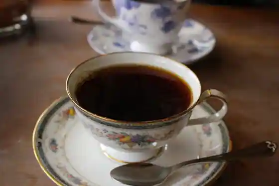
Kuramubon
匠
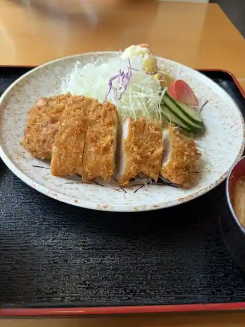
Takumi
中能登洋食堂 メッシモ
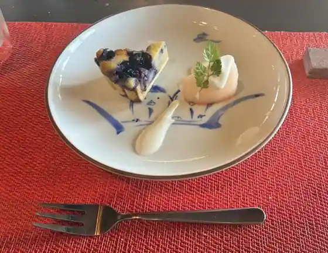
Nakanoto Hiroshi Shokudo Messhimo
みうら屋
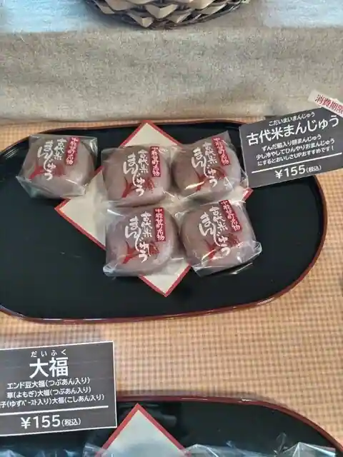
Miura Ya
吾いち
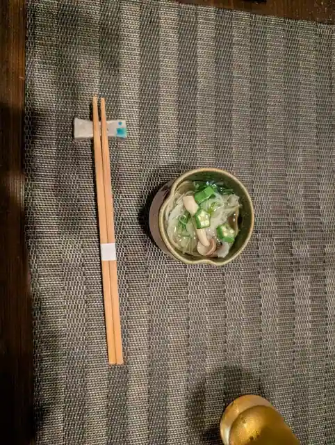
Ware Ichi
八幡すしべん 羽坂店
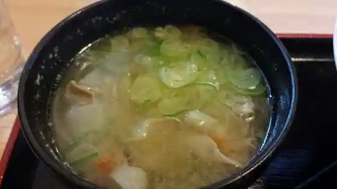
Hachiman Sushiben Hane Saka
福興
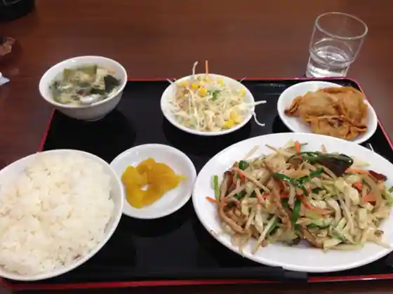
Fukko
焼肉一平
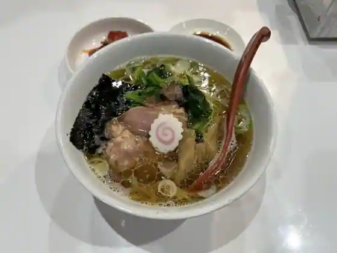
Yakiniku Ippei
サンドッグウラベ
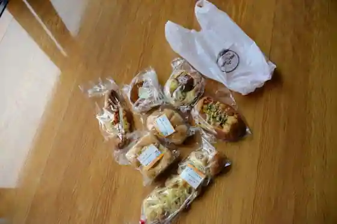
Sandoggurabe
旬鮮酒家おやじ
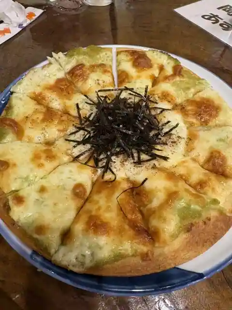
Jun Sen Shuka Oyaji
Cafe hanare
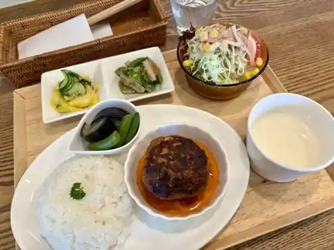
Cafe hanare
さくまお好み焼店
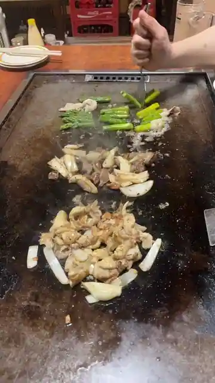
Sakumao Konomi Yaki
ゴーゴーカレー 鹿島店
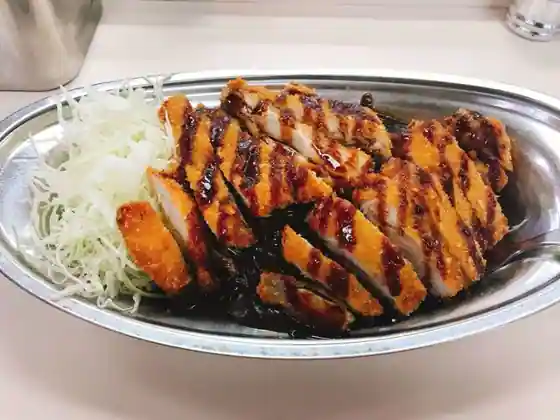
Gogokare Kashima
パーティーランド
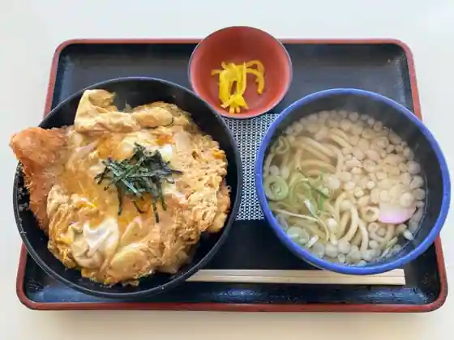
Pateirando
焼肉居酒屋 信
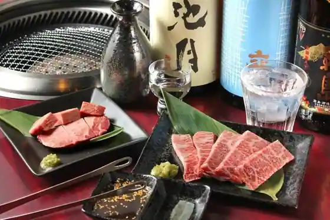
Yakiniku Izakaya Shin
KIKI
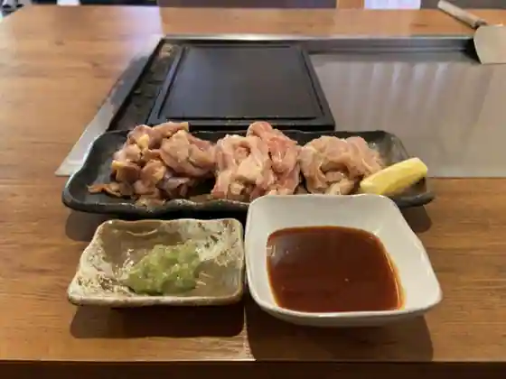
KIKI
Sights
Fudo Taki
Noto Kuni Ni Yuki Miya Tenjitsu In Hime Shrine

Isurugi Yama

Goishigamine Prefectural Nature Park

Ishikawa Prefectural Kashima Shonen Nature no Ie

Noto Jofu Hall
Nakanoto Orimono Dezain Center
Ame no Miyako Fun Gun
Burial Mound Koen Toriya
Dokan Keijo Ato
Noto Tekisutairu Rabo
I Su Ryu Shi Hiko Shrine
Appii Rokusei
Noto Bu Shrine
Shinnozuka Burial Mound
Kuni Toroku Yukei Bunkazai Kyu Tango Tei
Isurugi Yama Tento Village
Mayu Takegaoka Kyukeijo
Dokan Park
Kunishige Yo Mukei Minzoku Bunkazai (U Sama Dochu) no Yado
Mayu Jozan Kaminarigamine
Isurugi Yama Museum
Furusato So Osamu Kan
Kenko Hausu Kei
Kuni Toroku Yukei Bunkazai Ko Minka Mioya Village
Ame no Miya Noto Obo no Kan
Noto Obo Boranteiagaido no Kai
Ame no Miya Guriin Plaza
Kyukan Bo
(Kabu) Chiiki Mirai
Nakanoto Town Hall